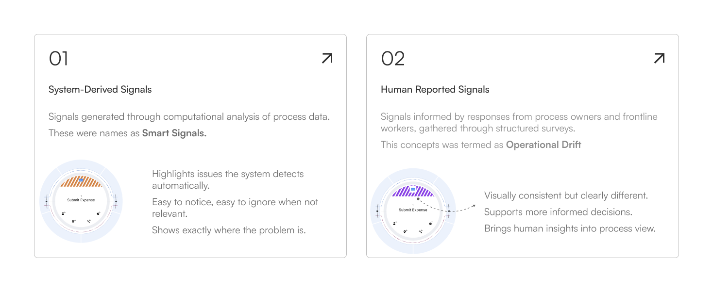
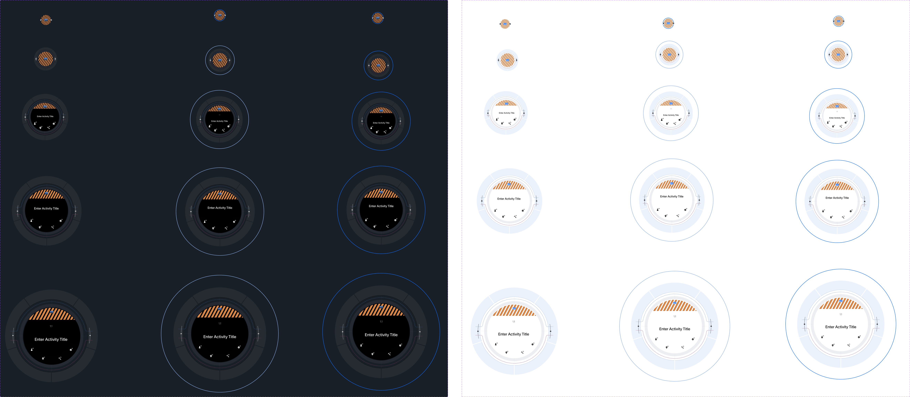
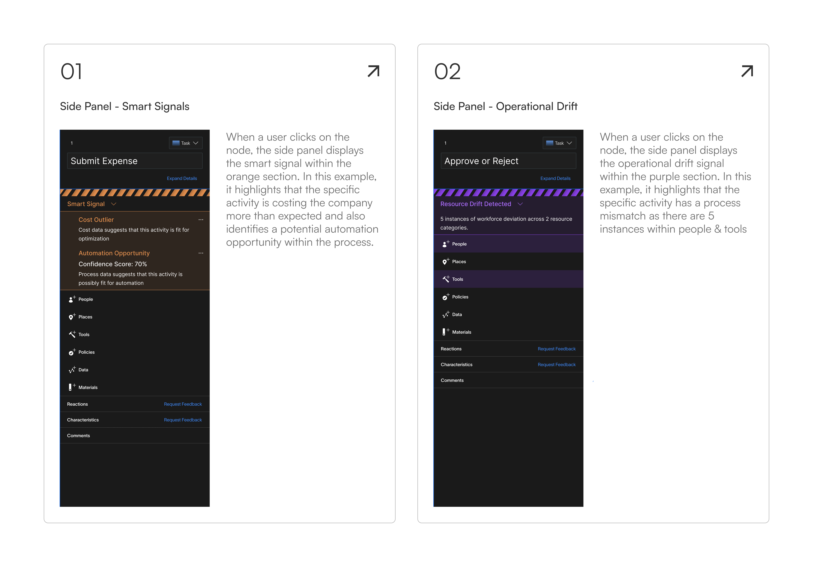
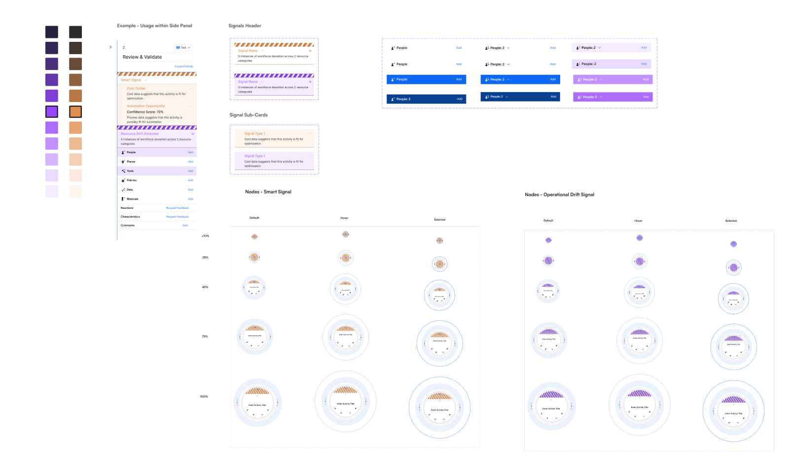
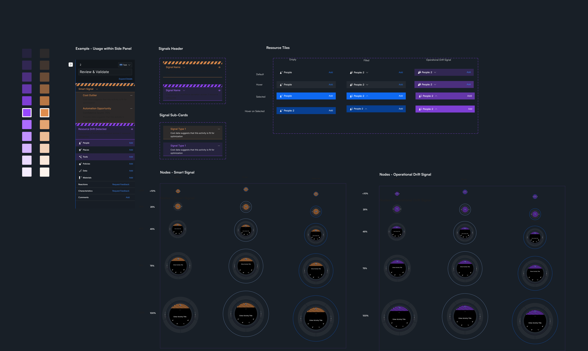

Zenda LLC
Designing AI Signals for Enterprise Operations
Designed a signal-based intelligence platform that helped enterprise teams uncover hidden process inefficiencies, cost anomalies, and workflow drift. By turning complex operational data into explainable insights, the system enabled faster, more confident decisions without replacing human judgment.
Overview
Zenda is a B2B enterprise platform that helps organizations understand how work actually gets done inside complex operations — not just how it is documented. The platform breaks work down into events, activities, and resources (people, tools, data, policies), making it possible to compare what a process is supposed to look like with how it is really executed on the ground. In this project, I designed a signal-based system that helps process owners quickly spot hidden cost issues and misalignments, turning complex operational data into clear, trustworthy signals while keeping decision-making firmly in human hands.
Design Process
- Gather Requirements
- Help Define Scope
- Desk Research
- Define Look & Feel
- High Fidelity Mockups
- Review & Iterate
Problem Statement
Process owners and operational leaders were responsible for managing complex, evolving processes, but lacked timely and reliable ways to understand how those processes were behaving day to day.
Challenge 1
Limited visibility into where attention was most needed within large, interconnected processes.
Challenge 2
Difficulty keeping documented process definitions aligned with real-world execution as teams, tools, and constraints changed over time.
Challenge 3
Heavy dependence on manual reviews, static reports, and periodic audits to uncover issues.
How might we help process owners recognize what matters most within complex workflows, without overwhelming them or breaking the visual integrity of the system?
Users
Two primary roles used the platform with distinct goals and pain points.
01 — Process Owner (Builder / Creator)
Goals
- Build accurate process flows that reflect real-world operations
- Continuously improve efficiency and compliance
- Keep workflows updated as teams evolve
Needs
- Easy-to-edit process models
- Visibility into workflow changes and deviations
- Confidence that data accurately maps to processes
Motivations
- Creating operational clarity across teams
- Reducing inefficiencies through better systems
- Ensuring processes scale effectively
Pain Points
- Outdated or inaccurate process documentation
- Difficulty tracking hidden workflow changes
- Manual effort required to maintain process accuracy
02 — Operations Leader / Manager (Reader / Decision-Maker)
Goals
- Monitor operational performance across teams
- Identify issues quickly and prioritize action
- Improve efficiency, cost, and output metrics
Needs
- High-level dashboards with actionable insights
- Clear signals on anomalies and risks
- Fast access to decision-ready data
Motivations
- Driving measurable business outcomes
- Making faster, smarter operational decisions
- Increasing team accountability and performance
Pain Points
- Limited visibility into day-to-day operations
- Too much data but little clarity on priorities
- Delayed decisions due to manual reporting and audits
Scope
Automation Potential
Steps that were highly manual, repetitive, or rule-based — strong candidates for automation.
Cost Outliers
Activities or variants that disproportionately drove operational cost or rework within the process.
Process Mismatches
Breakdowns between expected and actual process flows — including skipped steps, loops, or misaligned handoffs.
We needed a system of signalling to cut through operational noise and guide process owners toward what truly needed their attention. This system of signalling would also help if in case there are any future alerts needed.
Researching Existing Systems
I conducted extensive research to understand different signalling systems in the real world. I decoded what information they were trying to communicate through each pattern, color, or shape selected. Exploration included various systems like Heraldry, Nautical Flags, Japanese Mon, and more.


Design Decisions
Through desk research, I identified several recurring design principles used across different signalling systems. Based on these common patterns and similarities, I derived the core role signals should play within the product experience.
- Noticeable, not noisy — Signals appeared only when meaningful thresholds or anomalies were detected, ensuring attention was drawn to exceptions rather than normal behavior.
- Simple by default — Signals used minimal visual attributes (single color and simple iconography) so they could be understood at a glance.
- One signal, one meaning — Each signal mapped to a single underlying condition, avoiding overloaded or compound indicators.
- Human-in-the-loop — Signals surfaced insights without prescribing actions, allowing users to explore context and make informed decisions.
- Scalable by design — Signals were implemented as a consistent overlay on the process map, enabling new signals to scale without altering the core layout.

Various Zoom Heights
After deciding on different types of signals and how should they look and feel, I decided on making different versions of how would they look in different zoom heights and in different modes.

Corresponding Side Panel
Each signal node opens a side panel with contextual detail. Color plays a key role in distinguishing signal types at a glance.

Final Design Assets
Here is a snippet of certain new components that were designed, keeping in mind different modes and the internal design library at Zenda.


Final Design
The final signal system was built as a consistent overlay on the process map, with two distinct signal types — smart signals and operational drift — each with their own visual language and side panel experience.
Impact
- Shipped a net-new signaling system from concept to production in approximately 6 sprints.
- The feature was later highlighted on the Zenda website, reflecting its strategic importance to the product offering.
- Became a key differentiator in sales demos, helping simplify complex process insights.
- The signaling framework established a reusable pattern that enabled future insights to be added without redesigning the core experience.
- Achieved 62% adoption across enterprise teams within the first quarter of release.